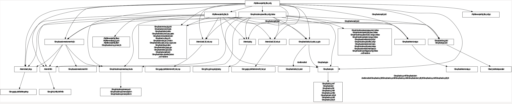

<!doctype html>
<html lang="zh" class="no-js">
  <head>
    <meta charset="utf-8">
<meta name="viewport" content="width=device-width, initial-scale=1, shrink-to-fit=no">
<meta name="generator" content="Hugo 0.75.1" />

<META NAME="ROBOTS" CONTENT="NOINDEX, NOFOLLOW">


<link rel="shortcut icon" href="/favicons/favicon.ico" >
<link rel="apple-touch-icon" href="/sig-envoy/favicons/apple-touch-icon-180x180.png" sizes="180x180">
<link rel="icon" type="image/png" href="/sig-envoy/favicons/favicon-16x16.png" sizes="16x16">
<link rel="icon" type="image/png" href="/sig-envoy/favicons/favicon-32x32.png" sizes="32x32">
<link rel="icon" type="image/png" href="/sig-envoy/favicons/android-36x36.png" sizes="36x36">
<link rel="icon" type="image/png" href="/sig-envoy/favicons/android-48x48.png" sizes="48x48">
<link rel="icon" type="image/png" href="/sig-envoy/favicons/android-72x72.png" sizes="72x72">
<link rel="icon" type="image/png" href="/sig-envoy/favicons/android-96x96.png" sizes="96x96">
<link rel="icon" type="image/png" href="/sig-envoy/favicons/android-144x144.png" sizes="144x144">
<link rel="icon" type="image/png" href="/sig-envoy/favicons/android-192x192.png" sizes="192x192">

<title>剖析Envoy Filter的Bazel编译配置 | Envoy SIG</title><meta property="og:title" content="剖析Envoy Filter的Bazel编译配置" />
<meta property="og:description" content="Envoy是一款使用现代C&#43;&#43;语言编写的L4/L7网络代理，采用Bazel进行依赖管理与执行编译过程。本文将以官方一个简单的HTTP Filter作为例子，分析Bazel在filter编译构建过程中所起的作用，为希望快速开始开发与编译filter的开发者提供指引，帮助大家快速了解envoy filter的编译流程。" />
<meta property="og:type" content="article" />
<meta property="og:url" content="https://cloudnative.to/sig-envoy/blog/2020/09/25/%E5%89%96%E6%9E%90envoy-filter%E7%9A%84bazel%E7%BC%96%E8%AF%91%E9%85%8D%E7%BD%AE/" />
<meta property="article:published_time" content="2020-09-25T08:45:20+08:00" />
<meta property="article:modified_time" content="2021-02-23T11:22:09+00:00" /><meta property="og:site_name" content="Envoy SIG" />
<meta itemprop="name" content="剖析Envoy Filter的Bazel编译配置">
<meta itemprop="description" content="Envoy是一款使用现代C&#43;&#43;语言编写的L4/L7网络代理，采用Bazel进行依赖管理与执行编译过程。本文将以官方一个简单的HTTP Filter作为例子，分析Bazel在filter编译构建过程中所起的作用，为希望快速开始开发与编译filter的开发者提供指引，帮助大家快速了解envoy filter的编译流程。">
<meta itemprop="datePublished" content="2020-09-25T08:45:20+08:00" />
<meta itemprop="dateModified" content="2021-02-23T11:22:09+00:00" />
<meta itemprop="wordCount" content="794">


<meta itemprop="keywords" content="envoy,mesh," />
<meta name="twitter:card" content="summary"/>
<meta name="twitter:title" content="剖析Envoy Filter的Bazel编译配置"/>
<meta name="twitter:description" content="Envoy是一款使用现代C&#43;&#43;语言编写的L4/L7网络代理，采用Bazel进行依赖管理与执行编译过程。本文将以官方一个简单的HTTP Filter作为例子，分析Bazel在filter编译构建过程中所起的作用，为希望快速开始开发与编译filter的开发者提供指引，帮助大家快速了解envoy filter的编译流程。"/>


<link rel="preload" href="/sig-envoy/scss/main.min.1b0fe2bdad95a48b1637110ca7984f00e1e84f9e71e1009c4a18132806282673.css" as="style">
<link href="/sig-envoy/scss/main.min.1b0fe2bdad95a48b1637110ca7984f00e1e84f9e71e1009c4a18132806282673.css" rel="stylesheet" integrity="">


  <script src="/js/jquery-3.5.1.min.js"></script>

  <script src="/js/lunr.min.js"></script>


  </head>
  <body class="td-page td-blog">
    <header>
      
<nav class="js-navbar-scroll navbar navbar-expand navbar-dark flex-column flex-md-row td-navbar">
    <a class="navbar-brand" href="/sig-envoy/">
        <span class="navbar-logo">
        <span class="text-uppercase font-weight-bold">Envoy SIG</span> 
    </a>
    <div class="td-navbar-nav-scroll ml-md-auto" id="main_navbar">
        <ul class="navbar-nav mt-2 mt-lg-0">
             
            <li class="nav-item mr-4 mb-2 mb-lg-0">
                     
                <a class="nav-link active" href="/sig-envoy/blog/" >
                    <span class="active" >博客</span>
                </a>
            </li>
            
            <li class="nav-item mr-4 mb-2 mb-lg-0">
                     
                <a class="nav-link" href="/sig-envoy/docs/community/" >
                    <span>社区</span>
                </a>
            </li>
            
            <li class="nav-item mr-4 mb-2 mb-lg-0">
                     
                <a class="nav-link" href="/sig-envoy/docs/" >
                    <span>文档</span>
                </a>
            </li>
              
        </ul>
    </div>
    <div class="navbar-nav d-none d-lg-block">
<input type="search" class="form-control td-search-input" placeholder="&#xf002 站内搜索…" aria-label="站内搜索…" autocomplete="off">

</div>
</nav>
    </header>
    <div class="container-fluid td-outer">
      <div class="td-main">
        <div class="row flex-xl-nowrap">
          <div class="col-12 col-md-3 col-xl-2 td-sidebar d-print-none">
            


<div id="td-sidebar-menu" class="td-sidebar__inner">
  
  <form class="td-sidebar__search d-flex align-items-center">
    
<input type="search" class="form-control td-search-input" placeholder="&#xf002 站内搜索…" aria-label="站内搜索…" autocomplete="off">


    <button class="btn btn-link td-sidebar__toggle d-md-none p-0 ml-3 fas fa-bars" type="button" data-toggle="collapse" data-target="#td-section-nav" aria-controls="td-docs-nav" aria-expanded="false" aria-label="Toggle section navigation">
    </button>
  </form>
  
  <nav class="collapse td-sidebar-nav" id="td-section-nav">
    
    


<ul class="td-sidebar-nav__section pr-md-3">
  <li class="td-sidebar-nav__section-title">
    <a  href="/sig-envoy/blog/" class="align-left pl-0 pr-2 td-sidebar-link td-sidebar-link__section">博客</a>
  </li>
  <ul>
    <li class="collapse show" id="sig-envoyblog">
      
      
      
      
      


<ul class="td-sidebar-nav__section pr-md-3">
  <li class="td-sidebar-nav__section-title">
    <a  href="/sig-envoy/blog/startup/" class="align-left pl-0 pr-2 active td-sidebar-link td-sidebar-link__section">新手上路系列</a>
  </li>
  <ul>
    <li class="collapse show" id="sig-envoyblogstartup">
      
      
      
      
      
      
      <a class="td-sidebar-link td-sidebar-link__page  active" id="m-sig-envoyblog20200925e58996e69e90envoy-filtere79a84bazele7bc96e8af91e9858de7bdae" href="/sig-envoy/blog/2020/09/25/%E5%89%96%E6%9E%90envoy-filter%E7%9A%84bazel%E7%BC%96%E8%AF%91%E9%85%8D%E7%BD%AE/">剖析Envoy Filter的Bazel编译配置</a>
      
      
    </li>
  </ul>
</ul>

      
      
      
      


<ul class="td-sidebar-nav__section pr-md-3">
  <li class="td-sidebar-nav__section-title">
    <a  href="/sig-envoy/blog/translation/" class="align-left pl-0 pr-2 collapsed td-sidebar-link td-sidebar-link__section">好文翻译系列</a>
  </li>
  <ul>
    <li class="collapse " id="sig-envoyblogtranslation">
      
      
      
      
      
      
      <a class="td-sidebar-link td-sidebar-link__page " id="m-sig-envoyblog20200510e5a682e4bd95e4b8ba-envoy-e69e84e5bbbae4b880e4b8aae68ea7e588b6e99da2e69da5e7aea1e79086e99b86e7bea4e7bd91e7bb9ce6b581e9878f" href="/sig-envoy/blog/2020/05/10/%E5%A6%82%E4%BD%95%E4%B8%BA-envoy-%E6%9E%84%E5%BB%BA%E4%B8%80%E4%B8%AA%E6%8E%A7%E5%88%B6%E9%9D%A2%E6%9D%A5%E7%AE%A1%E7%90%86%E9%9B%86%E7%BE%A4%E7%BD%91%E7%BB%9C%E6%B5%81%E9%87%8F/">如何为 Envoy 构建一个控制面来管理集群网络流量</a>
      
      
    </li>
  </ul>
</ul>

      
      
      
      


<ul class="td-sidebar-nav__section pr-md-3">
  <li class="td-sidebar-nav__section-title">
    <a  href="/sig-envoy/blog/code/" class="align-left pl-0 pr-2 collapsed td-sidebar-link td-sidebar-link__section">源码分析系列</a>
  </li>
  <ul>
    <li class="collapse " id="sig-envoyblogcode">
      
      
      
      
      
      
      <a class="td-sidebar-link td-sidebar-link__page " id="m-sig-envoyblog20200823envoye6ba90e7a081e58886e69e90e4b98bdispatchere69cbae588b6" href="/sig-envoy/blog/2020/08/23/envoy%E6%BA%90%E7%A0%81%E5%88%86%E6%9E%90%E4%B9%8Bdispatcher%E6%9C%BA%E5%88%B6/">Envoy源码分析之Dispatcher机制</a>
      
      
      
      
      
      <a class="td-sidebar-link td-sidebar-link__page " id="m-sig-envoyblog20200823envoye6ba90e7a081e58886e69e90e4b98bthreadlocale69cbae588b6" href="/sig-envoy/blog/2020/08/23/envoy%E6%BA%90%E7%A0%81%E5%88%86%E6%9E%90%E4%B9%8Bthreadlocal%E6%9C%BA%E5%88%B6/">Envoy源码分析之ThreadLocal机制</a>
      
      
    </li>
  </ul>
</ul>

      
      
    </li>
  </ul>
</ul>

  </nav>
</div>


          </div>
          <div class="d-none d-xl-block col-xl-2 td-toc d-print-none">
            


<div class="td-page-meta ml-2 pb-1 pt-2 mb-0">


<a href="https://github.com/cloudnativeto/sig-envoy/edit/master/content/zh/blog/startup/build-envoy-filter-bazel/index.md" target="_blank"><i class="fa fa-edit fa-fw"></i> 编辑此页</a>
<a href="https://github.com/cloudnativeto/sig-envoy/issues/new?title=%e5%89%96%e6%9e%90Envoy%20Filter%e7%9a%84Bazel%e7%bc%96%e8%af%91%e9%85%8d%e7%bd%ae" target="_blank"><i class="fab fa-github fa-fw"></i> 提交文档问题</a>


<a href="https://github.com/cloudnativeto/sig-envoy/issues/new" target="_blank"><i class="fas fa-tasks fa-fw"></i> 提交项目问题</a>

</div>


<nav id="TableOfContents">
  <ul>
    <li><a href="#引言">引言</a></li>
    <li><a href="#一bazel简介">一、Bazel简介</a>
      <ul>
        <li><a href="#workspace">WORKSPACE</a></li>
        <li><a href="#build">BUILD</a></li>
      </ul>
    </li>
    <li><a href="#二filter示例的目录结构">二、Filter示例的目录结构</a></li>
    <li><a href="#三workspace文件分析">三、WORKSPACE文件分析</a></li>
    <li><a href="#四echo-filter的build文件分析">四、echo filter的BUILD文件分析</a></li>
    <li><a href="#五http-filter的build文件分析">五、http filter的BUILD文件分析</a></li>
    <li><a href="#六有用的bazel命令">六、有用的Bazel命令</a>
      <ul>
        <li><a href="#bazelisk工具">bazelisk工具</a></li>
        <li><a href="#生成项目依赖图">生成项目依赖图</a></li>
        <li><a href="#开发过程中生成proto的c代码">开发过程中生成proto的c++代码</a></li>
      </ul>
    </li>
    <li><a href="#七总结">七、总结</a></li>
  </ul>
</nav>


          </div>
          <main class="col-12 col-md-9 col-xl-8 pl-md-5 pr-md-4" role="main">
            <a class="btn btn-lg -bg-orange td-rss-button d-none d-lg-block" href="https://cloudnative.to/sig-envoy/blog/startup/index.xml" target="_blank">
              RSS <i class="fa fa-rss ml-2 "></i>
            </a>
            
<div class="td-content">
	<h1>剖析Envoy Filter的Bazel编译配置</h1>
	
	<div class="td-byline mb-4">
		By <b>陈冠豪</b> |
		<time datetime="2020-09-25" class="text-muted">2020年9月25日</time>
	</div>
	<h2 id="引言">引言</h2>
<p>Envoy是一款使用现代C++语言编写的L4/L7网络代理，采用Bazel进行依赖管理与执行编译过程。本文将以官方一个简单的HTTP Filter作为例子，分析Bazel在filter编译构建过程中所起的作用，为希望快速开始开发与编译filter的开发者提供指引，帮助大家快速了解envoy filter的编译流程。</p>
<h2 id="一bazel简介">一、Bazel简介</h2>
<p>Bazel是一种类似CMake的用于组织编译过程的一个构建工具，类似Make，Maven和Gradle。其特点是可读性较好，支持跨语言，跨平台编译；并且可以定义代码库之间的依赖关系，支持跨代码库的联合构建。Bazel定义构建的依赖关系和规则，并管理构建生成的临时文件及二进制文件，具体的编译工作是调用各个语言的编译工具如gcc, javac等完成的。</p>
<p>这里简单介绍一下两个Bazel最重要的文件与相关概念：</p>
<h3 id="workspace">WORKSPACE</h3>
<p>WORKSPACE文件，用于指定当前文件夹就是一个Bazel的工作区。工作区是一个存放了所有源代码和Bazel编译输出文件的目录，也就是整个项目的根目录，WORKSPACE文件总是存在于项目的根目录下。</p>
<h3 id="build">BUILD</h3>
<p>一个或多个BUILD文件，用于告诉Bazel怎么构建项目的不同部分。如果工作区中的一个目录包含BUILD文件，那么它就是一个package。一个BUILD文件包含了几种不同类型的指令。其中最重要的是编译指令，它告诉Bazel如何编译想要的输出，比如可执行二进制文件或库。BUILD文件中的每一条编译指令被称为一个target。</p>
<p>接下来我们将开始分析Bazel在envoy-filter-example项目中的配置与作用，为了能够更好地阅读本文，希望大家已经有了Bazel的一些基础入门知识或者概念。关于Bazel的基础入门，可以参考一下两篇文章，看完了基本上就对Bazel有个总体了解了：</p>
<ul>
<li>Bazel官方示例解读（CSDN): <a href="https://blog.csdn.net/elaine_bao/article/details/78668657">https://blog.csdn.net/elaine_bao/article/details/78668657</a></li>
</ul>
<h2 id="二filter示例的目录结构">二、Filter示例的目录结构</h2>
<p>首先，我们从github上clone下来filter的示例代码，并拉取子模块：</p>
<div class="highlight"><pre style="background-color:#f8f8f8;-moz-tab-size:4;-o-tab-size:4;tab-size:4"><code class="language-bash" data-lang="bash">git clone https://github.com/envoyproxy/envoy-filter-example.git
<span style="color:#204a87">cd</span> envoy-filter-example
git submodule update --init
</code></pre></div><p>从仓库中，我们来分析一下使用Bazel编译时主要的目录结构：</p>
<div class="highlight"><pre style="background-color:#f8f8f8;-moz-tab-size:4;-o-tab-size:4;tab-size:4"><code class="language-json" data-lang="json"><span style="color:#a40000">.</span>
<span style="color:#a40000">├──</span> <span style="color:#a40000">WORKSPACE</span> <span style="color:#a40000">//</span> <span style="color:#a40000">指定该目录是一个Bazel工作区，文件内容告诉Bazel如何去得到其他的工程源供BUILD使用</span>
<span style="color:#a40000">├──</span> <span style="color:#a40000">BUILD</span> <span style="color:#a40000">//</span> <span style="color:#a40000">描述如何构建根目录Package</span>
<span style="color:#a40000">├──</span> <span style="color:#a40000">.bazelrc</span> <span style="color:#a40000">//</span> <span style="color:#a40000">对envoy/.bazelrc进行了引用</span>
<span style="color:#a40000">├──</span> <span style="color:#a40000">.bazelversion</span> <span style="color:#a40000">//</span> <span style="color:#a40000">文件内容表示该工作区需要使用的Bazel版本</span>
<span style="color:#a40000">├──</span> <span style="color:#a40000">echo</span><span style="color:#0000cf;font-weight:bold">2</span><span style="color:#a40000">.cc</span>
<span style="color:#a40000">├──</span> <span style="color:#a40000">echo</span><span style="color:#0000cf;font-weight:bold">2</span><span style="color:#a40000">.h</span>
<span style="color:#a40000">├──</span> <span style="color:#a40000">echo</span><span style="color:#0000cf;font-weight:bold">2</span><span style="color:#a40000">_config.cc</span>
<span style="color:#a40000">├──</span> <span style="color:#a40000">echo</span><span style="color:#0000cf;font-weight:bold">2</span><span style="color:#a40000">_integration_test.cc</span>
<span style="color:#a40000">├──</span> <span style="color:#a40000">bazel</span> <span style="color:#a40000">//</span> <span style="color:#a40000">仅包含了一个get_workspace_status文件，根据envoy/.bazelrc的描述，构建时将使用其生成--workspace_status_command参数的值</span>
<span style="color:#a40000">├──</span> <span style="color:#a40000">envoy</span> <span style="color:#a40000">//</span> <span style="color:#a40000">envoy源码作外部源被引入</span>
<span style="color:#a40000">│</span>   <span style="color:#a40000">├──</span> <span style="color:#a40000">WORKSPACE</span> <span style="color:#a40000">//</span> <span style="color:#a40000">envoy目录也是一个Bazel工作区，文件内容告诉Bazel如何去得到其他的工程源供BUILD使用</span>
<span style="color:#a40000">│</span>   <span style="color:#a40000">├──</span> <span style="color:#a40000">BUILD</span> <span style="color:#a40000">//</span> <span style="color:#a40000">描述了envoy根目录的构建规则</span>
<span style="color:#a40000">│</span>   <span style="color:#a40000">├──</span> <span style="color:#a40000">.bazelrc</span> <span style="color:#a40000">//</span> <span style="color:#a40000">包含了大量预定义的在执行bazel</span> <span style="color:#a40000">build时的默认参数，以及自定义扩展参数的描述</span>
<span style="color:#a40000">│</span>   <span style="color:#a40000">├──</span> <span style="color:#a40000">.bazelversion</span> <span style="color:#a40000">//</span> <span style="color:#a40000">文件内容表示该工作区需要使用的Bazel版本</span>
<span style="color:#a40000">│</span>   <span style="color:#a40000">├──</span> <span style="color:#a40000">bazel</span> <span style="color:#a40000">//</span> <span style="color:#a40000">文件夹中包含了大量自定义的Bazel配置文件，使用类似于Python的Starlark语言编写，会被BUILD与WORKSPACE文件引用</span>
<span style="color:#a40000">└──</span> <span style="color:#a40000">http-filter-example</span> <span style="color:#a40000">//</span> <span style="color:#a40000">http</span> <span style="color:#a40000">filter的源码目录，工作区的一个Package</span>
    <span style="color:#a40000">├──</span> <span style="color:#a40000">BUILD</span> <span style="color:#a40000">//</span> <span style="color:#a40000">定义了http</span> <span style="color:#a40000">filter这个Package的构建规则</span>
    <span style="color:#a40000">├──</span> <span style="color:#a40000">http_filter.cc</span>
    <span style="color:#a40000">├──</span> <span style="color:#a40000">http_filter.h</span>
    <span style="color:#a40000">├──</span> <span style="color:#a40000">http_filter.proto</span>
    <span style="color:#a40000">├──</span> <span style="color:#a40000">http_filter_config.cc</span>
    <span style="color:#a40000">└──</span> <span style="color:#a40000">http_filter_integration_test.cc</span>
</code></pre></div><h2 id="三workspace文件分析">三、WORKSPACE文件分析</h2>
<p>envoy_filter_example的WORKSPACE文件与envoyproxy项目的WORKSPACE文件结构与内容大体一致，通过分析filter的WORKSPACE文件，我们也就明白envoy自身的工作区描述了。</p>
<div class="highlight"><pre style="background-color:#f8f8f8;-moz-tab-size:4;-o-tab-size:4;tab-size:4"><code class="language-python" data-lang="python"><span style="color:#000">workspace</span><span style="color:#000;font-weight:bold">(</span><span style="color:#000">name</span> <span style="color:#ce5c00;font-weight:bold">=</span> <span style="color:#4e9a06">&#34;envoy_filter_example&#34;</span><span style="color:#000;font-weight:bold">)</span> <span style="color:#8f5902;font-style:italic"># 工作区名称</span>

<span style="color:#8f5902;font-style:italic"># 使用local_repository引入通过git submodule拉下来的envoy项目，并将项目命名为envoy，后续可通过@envoy进行引用</span>
<span style="color:#000">local_repository</span><span style="color:#000;font-weight:bold">(</span> 
    <span style="color:#000">name</span> <span style="color:#ce5c00;font-weight:bold">=</span> <span style="color:#4e9a06">&#34;envoy&#34;</span><span style="color:#000;font-weight:bold">,</span>
    <span style="color:#000">path</span> <span style="color:#ce5c00;font-weight:bold">=</span> <span style="color:#4e9a06">&#34;envoy&#34;</span><span style="color:#000;font-weight:bold">,</span>
<span style="color:#000;font-weight:bold">)</span>

<span style="color:#8f5902;font-style:italic"># 从envoy的bazel/api_binding.bzl中读取envoy_api_binding符号</span>
<span style="color:#000">load</span><span style="color:#000;font-weight:bold">(</span><span style="color:#4e9a06">&#34;@envoy//bazel:api_binding.bzl&#34;</span><span style="color:#000;font-weight:bold">,</span> <span style="color:#4e9a06">&#34;envoy_api_binding&#34;</span><span style="color:#000;font-weight:bold">)</span>

<span style="color:#8f5902;font-style:italic"># envoy_api_binding函数会注册@envoy_api与@envoy_api_canonical两个外部依赖，分别指向envoy/generated_api_shadow以及envoy/api。</span>
<span style="color:#8f5902;font-style:italic"># 通过对函数注释的解读，以及对源码的全局搜索，可见envoy源码中仅使用了@envoy_api依赖引用，而@envoy_api则由@envoy_api_canonical通过脚本进行生成，从而能在编译时过滤掉不在使用，而又正在开发或已经废弃的api</span>
<span style="color:#000">envoy_api_binding</span><span style="color:#000;font-weight:bold">()</span>

<span style="color:#8f5902;font-style:italic"># 从envoy的bazel/api_repositories.bzl中读取envoy_api_dependencies符号</span>
<span style="color:#000">load</span><span style="color:#000;font-weight:bold">(</span><span style="color:#4e9a06">&#34;@envoy//bazel:api_repositories.bzl&#34;</span><span style="color:#000;font-weight:bold">,</span> <span style="color:#4e9a06">&#34;envoy_api_dependencies&#34;</span><span style="color:#000;font-weight:bold">)</span>

<span style="color:#8f5902;font-style:italic"># envoy_api_dependencies函数定义了@envoy_api所需要的外部依赖</span>
<span style="color:#000">envoy_api_dependencies</span><span style="color:#000;font-weight:bold">()</span>

<span style="color:#8f5902;font-style:italic"># 从envoy的bazel/repositories.bzl中读取envoy_dependencies符号</span>
<span style="color:#000">load</span><span style="color:#000;font-weight:bold">(</span><span style="color:#4e9a06">&#34;@envoy//bazel:repositories.bzl&#34;</span><span style="color:#000;font-weight:bold">,</span> <span style="color:#4e9a06">&#34;envoy_dependencies&#34;</span><span style="color:#000;font-weight:bold">)</span>

<span style="color:#8f5902;font-style:italic"># envoy_dependencies函数载入了所有envoy编译需要的核心依赖，以及根据配置载入了需要编译进envoy的扩展的源码目标位置</span>
<span style="color:#000">envoy_dependencies</span><span style="color:#000;font-weight:bold">()</span>

<span style="color:#8f5902;font-style:italic"># 从envoy的bazel/repositories_extra.bzl中读取envoy_dependencies_extra符号</span>
<span style="color:#000">load</span><span style="color:#000;font-weight:bold">(</span><span style="color:#4e9a06">&#34;@envoy//bazel:repositories_extra.bzl&#34;</span><span style="color:#000;font-weight:bold">,</span> <span style="color:#4e9a06">&#34;envoy_dependencies_extra&#34;</span><span style="color:#000;font-weight:bold">)</span>

<span style="color:#8f5902;font-style:italic"># envoy_dependencies_extra函数载入了在envoy编译过程中所需要的工具，主要是一些python库和工具</span>
<span style="color:#000">envoy_dependencies_extra</span><span style="color:#000;font-weight:bold">()</span>

<span style="color:#8f5902;font-style:italic"># 从envoy的bazel/dependency_imports.bzl中读取envoy_dependency_imports符号</span>
<span style="color:#000">load</span><span style="color:#000;font-weight:bold">(</span><span style="color:#4e9a06">&#34;@envoy//bazel:dependency_imports.bzl&#34;</span><span style="color:#000;font-weight:bold">,</span> <span style="color:#4e9a06">&#34;envoy_dependency_imports&#34;</span><span style="color:#000;font-weight:bold">)</span>

<span style="color:#8f5902;font-style:italic"># envoy_dependency_imports函数载入了编译envoy时需要的bazel扩展功能，包括对不支持Bazel的第三方依赖支持、golang编译扩展、proto编译支持等</span>
<span style="color:#000">envoy_dependency_imports</span><span style="color:#000;font-weight:bold">()</span>
</code></pre></div><p>以上便是WORKSPACE文件内容的分析，它将整个项目所需要的底层依赖都进行了描述，使得每个Package中的BUILD文件都能够从这些底层依赖中直接引用相关库与工具，分离了依赖的引入与对依赖所执行的动作。</p>
<h2 id="四echo-filter的build文件分析">四、echo filter的BUILD文件分析</h2>
<p>接下来，我们将看一下echo filter的BUILD文件内容，分析一下它的编译过程。</p>
<div class="highlight"><pre style="background-color:#f8f8f8;-moz-tab-size:4;-o-tab-size:4;tab-size:4"><code class="language-python" data-lang="python"><span style="color:#8f5902;font-style:italic"># package函数修改了本Package规则的可见性，允许在其他Package中可以直接使用本Package的规则</span>
<span style="color:#000">package</span><span style="color:#000;font-weight:bold">(</span><span style="color:#000">default_visibility</span> <span style="color:#ce5c00;font-weight:bold">=</span> <span style="color:#000;font-weight:bold">[</span><span style="color:#4e9a06">&#34;//visibility:public&#34;</span><span style="color:#000;font-weight:bold">])</span>

<span style="color:#8f5902;font-style:italic"># load从在WORKSPACE中引入的@envoy依赖中加载envoy_cc_binary、envoy_cc_library与envoy_cc_test符号</span>
<span style="color:#000">load</span><span style="color:#000;font-weight:bold">(</span>
    <span style="color:#4e9a06">&#34;@envoy//bazel:envoy_build_system.bzl&#34;</span><span style="color:#000;font-weight:bold">,</span>
    <span style="color:#4e9a06">&#34;envoy_cc_binary&#34;</span><span style="color:#000;font-weight:bold">,</span>
    <span style="color:#4e9a06">&#34;envoy_cc_library&#34;</span><span style="color:#000;font-weight:bold">,</span>
    <span style="color:#4e9a06">&#34;envoy_cc_test&#34;</span><span style="color:#000;font-weight:bold">,</span>
<span style="color:#000;font-weight:bold">)</span>

<span style="color:#8f5902;font-style:italic"># envoy_cc_binary是对Bazel自带的cc_binary的扩展函数</span>
<span style="color:#8f5902;font-style:italic"># 从函数定义中看出，envoy_cc_binary自动根据操作系统使用不同的linkopts连接参数、copts编译参数，以及添加默认依赖等</span>
<span style="color:#000">envoy_cc_binary</span><span style="color:#000;font-weight:bold">(</span>
    <span style="color:#000">name</span> <span style="color:#ce5c00;font-weight:bold">=</span> <span style="color:#4e9a06">&#34;envoy&#34;</span><span style="color:#000;font-weight:bold">,</span> 
    <span style="color:#000">repository</span> <span style="color:#ce5c00;font-weight:bold">=</span> <span style="color:#4e9a06">&#34;@envoy&#34;</span><span style="color:#000;font-weight:bold">,</span> <span style="color:#8f5902;font-style:italic"># envoy_cc_binary自定义的参数，用于指定envoy的依赖名称，与WORKSPACE中的一致</span>
    <span style="color:#000">deps</span> <span style="color:#ce5c00;font-weight:bold">=</span> <span style="color:#000;font-weight:bold">[</span>
        <span style="color:#4e9a06">&#34;:echo2_config&#34;</span><span style="color:#000;font-weight:bold">,</span>
        <span style="color:#4e9a06">&#34;@envoy//source/exe:envoy_main_entry_lib&#34;</span><span style="color:#000;font-weight:bold">,</span>
    <span style="color:#000;font-weight:bold">],</span> <span style="color:#8f5902;font-style:italic"># 编译依赖本项目的:echo2_config规则，以及@envoy中用于把main.cc编译为lib的规则</span>
<span style="color:#000;font-weight:bold">)</span>

<span style="color:#8f5902;font-style:italic"># envoy_cc_library是对Bazel自带的cc_library的扩展函数</span>
<span style="color:#8f5902;font-style:italic"># 与envoy_cc_binary一样，envoy_cc_library自动根据操作系统使用不同的copts编译参数、添加默认依赖、修改header路径前缀等功能；此外，它除了会生成一条同名的cc_library规则外，还会额外生成一条名为${name}_with_external_headers的cc_library规则，不同点在于使用了&#34;nocompdb&#34;的tag，用于供第三方项目引用envoy时使用。</span>
<span style="color:#000">envoy_cc_library</span><span style="color:#000;font-weight:bold">(</span>
    <span style="color:#000">name</span> <span style="color:#ce5c00;font-weight:bold">=</span> <span style="color:#4e9a06">&#34;echo2_lib&#34;</span><span style="color:#000;font-weight:bold">,</span> <span style="color:#8f5902;font-style:italic"># echo2_lib规则用于filter逻辑实现代码部分的编译</span>
    <span style="color:#000">srcs</span> <span style="color:#ce5c00;font-weight:bold">=</span> <span style="color:#000;font-weight:bold">[</span><span style="color:#4e9a06">&#34;echo2.cc&#34;</span><span style="color:#000;font-weight:bold">],</span> <span style="color:#8f5902;font-style:italic"># 编译时直接使用的源代码文件</span>
    <span style="color:#000">hdrs</span> <span style="color:#ce5c00;font-weight:bold">=</span> <span style="color:#000;font-weight:bold">[</span><span style="color:#4e9a06">&#34;echo2.h&#34;</span><span style="color:#000;font-weight:bold">],</span> <span style="color:#8f5902;font-style:italic"># 编译时直接使用的头文件</span>
    <span style="color:#000">repository</span> <span style="color:#ce5c00;font-weight:bold">=</span> <span style="color:#4e9a06">&#34;@envoy&#34;</span><span style="color:#000;font-weight:bold">,</span>
    <span style="color:#000">deps</span> <span style="color:#ce5c00;font-weight:bold">=</span> <span style="color:#000;font-weight:bold">[</span>
        <span style="color:#4e9a06">&#34;@envoy//include/envoy/buffer:buffer_interface&#34;</span><span style="color:#000;font-weight:bold">,</span>
        <span style="color:#4e9a06">&#34;@envoy//include/envoy/network:connection_interface&#34;</span><span style="color:#000;font-weight:bold">,</span>
        <span style="color:#4e9a06">&#34;@envoy//include/envoy/network:filter_interface&#34;</span><span style="color:#000;font-weight:bold">,</span>
        <span style="color:#4e9a06">&#34;@envoy//source/common/common:assert_lib&#34;</span><span style="color:#000;font-weight:bold">,</span>
        <span style="color:#4e9a06">&#34;@envoy//source/common/common:logger_lib&#34;</span><span style="color:#000;font-weight:bold">,</span>
    <span style="color:#000;font-weight:bold">],</span> <span style="color:#8f5902;font-style:italic"># 编译echo2_lib需要的envoy工作区依赖，此处不作展开</span>
<span style="color:#000;font-weight:bold">)</span>

<span style="color:#000">envoy_cc_library</span><span style="color:#000;font-weight:bold">(</span>
    <span style="color:#000">name</span> <span style="color:#ce5c00;font-weight:bold">=</span> <span style="color:#4e9a06">&#34;echo2_config&#34;</span><span style="color:#000;font-weight:bold">,</span> <span style="color:#8f5902;font-style:italic"># echo2_config规则用于filter如何从配置中初始化filter，以及注册filter到envoy的代码部分的编译</span>
    <span style="color:#000">srcs</span> <span style="color:#ce5c00;font-weight:bold">=</span> <span style="color:#000;font-weight:bold">[</span><span style="color:#4e9a06">&#34;echo2_config.cc&#34;</span><span style="color:#000;font-weight:bold">],</span>
    <span style="color:#000">repository</span> <span style="color:#ce5c00;font-weight:bold">=</span> <span style="color:#4e9a06">&#34;@envoy&#34;</span><span style="color:#000;font-weight:bold">,</span>
    <span style="color:#000">deps</span> <span style="color:#ce5c00;font-weight:bold">=</span> <span style="color:#000;font-weight:bold">[</span>
        <span style="color:#4e9a06">&#34;:echo2_lib&#34;</span><span style="color:#000;font-weight:bold">,</span>
        <span style="color:#4e9a06">&#34;@envoy//include/envoy/network:filter_interface&#34;</span><span style="color:#000;font-weight:bold">,</span>
        <span style="color:#4e9a06">&#34;@envoy//include/envoy/registry:registry&#34;</span><span style="color:#000;font-weight:bold">,</span>
        <span style="color:#4e9a06">&#34;@envoy//include/envoy/server:filter_config_interface&#34;</span><span style="color:#000;font-weight:bold">,</span>
    <span style="color:#000;font-weight:bold">],</span>
<span style="color:#000;font-weight:bold">)</span>

<span style="color:#8f5902;font-style:italic"># envoy_cc_test是对Bazel自带的cc_的扩展函数，与上述envoy_cc_binary功能类似，不再展开。</span>
<span style="color:#000">envoy_cc_test</span><span style="color:#000;font-weight:bold">(</span>
    <span style="color:#000">name</span> <span style="color:#ce5c00;font-weight:bold">=</span> <span style="color:#4e9a06">&#34;echo2_integration_test&#34;</span><span style="color:#000;font-weight:bold">,</span>
    <span style="color:#000">srcs</span> <span style="color:#ce5c00;font-weight:bold">=</span> <span style="color:#000;font-weight:bold">[</span><span style="color:#4e9a06">&#34;echo2_integration_test.cc&#34;</span><span style="color:#000;font-weight:bold">],</span>
    <span style="color:#000">data</span> <span style="color:#ce5c00;font-weight:bold">=</span>  <span style="color:#000;font-weight:bold">[</span><span style="color:#4e9a06">&#34;echo2_server.yaml&#34;</span><span style="color:#000;font-weight:bold">],</span>
    <span style="color:#000">repository</span> <span style="color:#ce5c00;font-weight:bold">=</span> <span style="color:#4e9a06">&#34;@envoy&#34;</span><span style="color:#000;font-weight:bold">,</span>
    <span style="color:#000">deps</span> <span style="color:#ce5c00;font-weight:bold">=</span> <span style="color:#000;font-weight:bold">[</span>
        <span style="color:#4e9a06">&#34;:echo2_config&#34;</span><span style="color:#000;font-weight:bold">,</span>
        <span style="color:#4e9a06">&#34;@envoy//test/integration:integration_lib&#34;</span>
    <span style="color:#000;font-weight:bold">],</span>
<span style="color:#000;font-weight:bold">)</span>

<span style="color:#8f5902;font-style:italic"># sh_test是Bazel自带的函数，允许编写一段Shell脚本进行测试</span>
<span style="color:#000">sh_test</span><span style="color:#000;font-weight:bold">(</span>
    <span style="color:#000">name</span> <span style="color:#ce5c00;font-weight:bold">=</span> <span style="color:#4e9a06">&#34;envoy_binary_test&#34;</span><span style="color:#000;font-weight:bold">,</span>
    <span style="color:#000">srcs</span> <span style="color:#ce5c00;font-weight:bold">=</span> <span style="color:#000;font-weight:bold">[</span><span style="color:#4e9a06">&#34;envoy_binary_test.sh&#34;</span><span style="color:#000;font-weight:bold">],</span> <span style="color:#8f5902;font-style:italic"># 需要执行的Shell测试脚本</span>
    <span style="color:#000">data</span> <span style="color:#ce5c00;font-weight:bold">=</span> <span style="color:#000;font-weight:bold">[</span><span style="color:#4e9a06">&#34;:envoy&#34;</span><span style="color:#000;font-weight:bold">],</span> <span style="color:#8f5902;font-style:italic"># 依赖的文件列表，此处依赖了编译生成的envoy二进制文件</span>
<span style="color:#000;font-weight:bold">)</span>
</code></pre></div><h2 id="五http-filter的build文件分析">五、http filter的BUILD文件分析</h2>
<p>http filter的BUILD文件内容与上述echo filter的有相当一部分是相似的，而有少量新的规则出现在了http filter的BUILD中，下面主要分析一下新增的部分，对于其他类似的部分，参考上述对echo filter的分析即可。</p>
<p>http filter新增的规则，主要体现在对于filter的proto描述文件的处理上，包括转换为cc文件、对转换后的文件进行编译等动作。</p>
<div class="highlight"><pre style="background-color:#f8f8f8;-moz-tab-size:4;-o-tab-size:4;tab-size:4"><code class="language-python" data-lang="python"><span style="color:#000">package</span><span style="color:#000;font-weight:bold">(</span><span style="color:#000">default_visibility</span> <span style="color:#ce5c00;font-weight:bold">=</span> <span style="color:#000;font-weight:bold">[</span><span style="color:#4e9a06">&#34;//visibility:public&#34;</span><span style="color:#000;font-weight:bold">])</span> <span style="color:#8f5902;font-style:italic"># 参考echo filter部分</span>

<span style="color:#000">load</span><span style="color:#000;font-weight:bold">(</span>
    <span style="color:#4e9a06">&#34;@envoy//bazel:envoy_build_system.bzl&#34;</span><span style="color:#000;font-weight:bold">,</span>
    <span style="color:#4e9a06">&#34;envoy_cc_binary&#34;</span><span style="color:#000;font-weight:bold">,</span>
    <span style="color:#4e9a06">&#34;envoy_cc_library&#34;</span><span style="color:#000;font-weight:bold">,</span>
    <span style="color:#4e9a06">&#34;envoy_cc_test&#34;</span><span style="color:#000;font-weight:bold">,</span>
<span style="color:#000;font-weight:bold">)</span> <span style="color:#8f5902;font-style:italic"># 参考echo filter部分</span>

<span style="color:#8f5902;font-style:italic"># 从envoy的bazel/api_build_system.bzl中读取api_proto_package符号</span>
<span style="color:#000">load</span><span style="color:#000;font-weight:bold">(</span><span style="color:#4e9a06">&#34;@envoy_api//bazel:api_build_system.bzl&#34;</span><span style="color:#000;font-weight:bold">,</span> <span style="color:#4e9a06">&#34;api_proto_package&#34;</span><span style="color:#000;font-weight:bold">)</span>

<span style="color:#000">envoy_cc_binary</span><span style="color:#000;font-weight:bold">(</span>
    <span style="color:#000">name</span> <span style="color:#ce5c00;font-weight:bold">=</span> <span style="color:#4e9a06">&#34;envoy&#34;</span><span style="color:#000;font-weight:bold">,</span>
    <span style="color:#000">repository</span> <span style="color:#ce5c00;font-weight:bold">=</span> <span style="color:#4e9a06">&#34;@envoy&#34;</span><span style="color:#000;font-weight:bold">,</span>
    <span style="color:#000">deps</span> <span style="color:#ce5c00;font-weight:bold">=</span> <span style="color:#000;font-weight:bold">[</span>
        <span style="color:#4e9a06">&#34;:http_filter_config&#34;</span><span style="color:#000;font-weight:bold">,</span>
        <span style="color:#4e9a06">&#34;@envoy//source/exe:envoy_main_entry_lib&#34;</span><span style="color:#000;font-weight:bold">,</span>
    <span style="color:#000;font-weight:bold">],</span>
<span style="color:#000;font-weight:bold">)</span> <span style="color:#8f5902;font-style:italic"># 参考echo filter部分</span>

<span style="color:#8f5902;font-style:italic"># 执行api_proto_package函数，该函数会对proto文件转换为cc文件，下一个模块我们将对本函数进行分析</span>
<span style="color:#000">api_proto_package</span><span style="color:#000;font-weight:bold">()</span>

<span style="color:#8f5902;font-style:italic"># http_filter_lib规则与上面的echo_lib规则相似，区别在于依赖了本Package的:pkg_cc_proto，而放眼整个BUILD文件，确找不到一个名为pkg_cc_proto的规则，我们将与上述api_proto_package()函数一起分析。</span>
<span style="color:#000">envoy_cc_library</span><span style="color:#000;font-weight:bold">(</span>
    <span style="color:#000">name</span> <span style="color:#ce5c00;font-weight:bold">=</span> <span style="color:#4e9a06">&#34;http_filter_lib&#34;</span><span style="color:#000;font-weight:bold">,</span>
    <span style="color:#000">srcs</span> <span style="color:#ce5c00;font-weight:bold">=</span> <span style="color:#000;font-weight:bold">[</span><span style="color:#4e9a06">&#34;http_filter.cc&#34;</span><span style="color:#000;font-weight:bold">],</span>
    <span style="color:#000">hdrs</span> <span style="color:#ce5c00;font-weight:bold">=</span> <span style="color:#000;font-weight:bold">[</span><span style="color:#4e9a06">&#34;http_filter.h&#34;</span><span style="color:#000;font-weight:bold">],</span>
    <span style="color:#000">repository</span> <span style="color:#ce5c00;font-weight:bold">=</span> <span style="color:#4e9a06">&#34;@envoy&#34;</span><span style="color:#000;font-weight:bold">,</span>
    <span style="color:#000">deps</span> <span style="color:#ce5c00;font-weight:bold">=</span> <span style="color:#000;font-weight:bold">[</span>
        <span style="color:#4e9a06">&#34;:pkg_cc_proto&#34;</span><span style="color:#000;font-weight:bold">,</span>
        <span style="color:#4e9a06">&#34;@envoy//source/exe:envoy_common_lib&#34;</span><span style="color:#000;font-weight:bold">,</span>
    <span style="color:#000;font-weight:bold">],</span>
<span style="color:#000;font-weight:bold">)</span>

<span style="color:#000">envoy_cc_library</span><span style="color:#000;font-weight:bold">(</span>
    <span style="color:#000">name</span> <span style="color:#ce5c00;font-weight:bold">=</span> <span style="color:#4e9a06">&#34;http_filter_config&#34;</span><span style="color:#000;font-weight:bold">,</span>
    <span style="color:#000">srcs</span> <span style="color:#ce5c00;font-weight:bold">=</span> <span style="color:#000;font-weight:bold">[</span><span style="color:#4e9a06">&#34;http_filter_config.cc&#34;</span><span style="color:#000;font-weight:bold">],</span>
    <span style="color:#000">repository</span> <span style="color:#ce5c00;font-weight:bold">=</span> <span style="color:#4e9a06">&#34;@envoy&#34;</span><span style="color:#000;font-weight:bold">,</span>
    <span style="color:#000">deps</span> <span style="color:#ce5c00;font-weight:bold">=</span> <span style="color:#000;font-weight:bold">[</span>
        <span style="color:#4e9a06">&#34;:http_filter_lib&#34;</span><span style="color:#000;font-weight:bold">,</span>
        <span style="color:#4e9a06">&#34;@envoy//include/envoy/server:filter_config_interface&#34;</span><span style="color:#000;font-weight:bold">,</span>
    <span style="color:#000;font-weight:bold">],</span>
<span style="color:#000;font-weight:bold">)</span> <span style="color:#8f5902;font-style:italic"># 参考echo filter部分</span>

<span style="color:#000">envoy_cc_test</span><span style="color:#000;font-weight:bold">(</span>
    <span style="color:#000">name</span> <span style="color:#ce5c00;font-weight:bold">=</span> <span style="color:#4e9a06">&#34;http_filter_integration_test&#34;</span><span style="color:#000;font-weight:bold">,</span>
    <span style="color:#000">srcs</span> <span style="color:#ce5c00;font-weight:bold">=</span> <span style="color:#000;font-weight:bold">[</span><span style="color:#4e9a06">&#34;http_filter_integration_test.cc&#34;</span><span style="color:#000;font-weight:bold">],</span>
    <span style="color:#000">repository</span> <span style="color:#ce5c00;font-weight:bold">=</span> <span style="color:#4e9a06">&#34;@envoy&#34;</span><span style="color:#000;font-weight:bold">,</span>
    <span style="color:#000">deps</span> <span style="color:#ce5c00;font-weight:bold">=</span> <span style="color:#000;font-weight:bold">[</span>
        <span style="color:#4e9a06">&#34;:http_filter_config&#34;</span><span style="color:#000;font-weight:bold">,</span>
        <span style="color:#4e9a06">&#34;@envoy//test/integration:http_integration_lib&#34;</span><span style="color:#000;font-weight:bold">,</span>
    <span style="color:#000;font-weight:bold">],</span>
<span style="color:#000;font-weight:bold">)</span> <span style="color:#8f5902;font-style:italic"># 参考echo filter部分</span>
</code></pre></div><p>对于http filter的BUILD文件，我们将重点放在api_proto_package()这个函数中，接下来将分析一下与这个函数相关的自定义规则，梳理一下它的作用于执行过程。</p>
<div class="highlight"><pre style="background-color:#f8f8f8;-moz-tab-size:4;-o-tab-size:4;tab-size:4"><code class="language-python" data-lang="python"><span style="color:#8f5902;font-style:italic"># 下文中主要需要关注的外部规则</span>
<span style="color:#000">load</span><span style="color:#000;font-weight:bold">(</span><span style="color:#4e9a06">&#34;@com_envoyproxy_protoc_gen_validate//bazel:pgv_proto_library.bzl&#34;</span><span style="color:#000;font-weight:bold">,</span> <span style="color:#4e9a06">&#34;pgv_cc_proto_library&#34;</span><span style="color:#000;font-weight:bold">)</span>
<span style="color:#000">load</span><span style="color:#000;font-weight:bold">(</span><span style="color:#4e9a06">&#34;@com_github_grpc_grpc//bazel:cc_grpc_library.bzl&#34;</span><span style="color:#000;font-weight:bold">,</span> <span style="color:#4e9a06">&#34;cc_grpc_library&#34;</span><span style="color:#000;font-weight:bold">)</span>
<span style="color:#000">load</span><span style="color:#000;font-weight:bold">(</span><span style="color:#4e9a06">&#34;@rules_proto//proto:defs.bzl&#34;</span><span style="color:#000;font-weight:bold">,</span> <span style="color:#4e9a06">&#34;proto_library&#34;</span><span style="color:#000;font-weight:bold">)</span>
<span style="color:#8f5902;font-style:italic"># load more rules...</span>

<span style="color:#8f5902;font-style:italic"># 定义了一些字符串常量，方便后续使用</span>
<span style="color:#000">_PY_PROTO_SUFFIX</span> <span style="color:#ce5c00;font-weight:bold">=</span> <span style="color:#4e9a06">&#34;_py_proto&#34;</span>
<span style="color:#000">_CC_PROTO_SUFFIX</span> <span style="color:#ce5c00;font-weight:bold">=</span> <span style="color:#4e9a06">&#34;_cc_proto&#34;</span>
<span style="color:#000">_CC_GRPC_SUFFIX</span> <span style="color:#ce5c00;font-weight:bold">=</span> <span style="color:#4e9a06">&#34;_cc_grpc&#34;</span>
<span style="color:#000">_GO_PROTO_SUFFIX</span> <span style="color:#ce5c00;font-weight:bold">=</span> <span style="color:#4e9a06">&#34;_go_proto&#34;</span>
<span style="color:#000">_GO_IMPORTPATH_PREFIX</span> <span style="color:#ce5c00;font-weight:bold">=</span> <span style="color:#4e9a06">&#34;github.com/envoyproxy/go-control-plane/&#34;</span>

<span style="color:#8f5902;font-style:italic"># api_proto_package定义了对于作为envoy api的proto将如何进行转换与编译，提供了c++、python以及golang相关的规则描述</span>
<span style="color:#204a87;font-weight:bold">def</span> <span style="color:#000">api_proto_package</span><span style="color:#000;font-weight:bold">(</span>
        <span style="color:#000">name</span> <span style="color:#ce5c00;font-weight:bold">=</span> <span style="color:#4e9a06">&#34;pkg&#34;</span><span style="color:#000;font-weight:bold">,</span> <span style="color:#8f5902;font-style:italic"># 默认名称为pkg</span>
        <span style="color:#000">srcs</span> <span style="color:#ce5c00;font-weight:bold">=</span> <span style="color:#000;font-weight:bold">[],</span>
        <span style="color:#000">deps</span> <span style="color:#ce5c00;font-weight:bold">=</span> <span style="color:#000;font-weight:bold">[],</span>
        <span style="color:#000">has_services</span> <span style="color:#ce5c00;font-weight:bold">=</span> <span style="color:#3465a4">False</span><span style="color:#000;font-weight:bold">,</span>
        <span style="color:#000">visibility</span> <span style="color:#ce5c00;font-weight:bold">=</span> <span style="color:#000;font-weight:bold">[</span><span style="color:#4e9a06">&#34;//visibility:public&#34;</span><span style="color:#000;font-weight:bold">]):</span>
    <span style="color:#204a87;font-weight:bold">if</span> <span style="color:#000">srcs</span> <span style="color:#ce5c00;font-weight:bold">==</span> <span style="color:#000;font-weight:bold">[]:</span>
        <span style="color:#000">srcs</span> <span style="color:#ce5c00;font-weight:bold">=</span> <span style="color:#000">native</span><span style="color:#ce5c00;font-weight:bold">.</span><span style="color:#000">glob</span><span style="color:#000;font-weight:bold">([</span><span style="color:#4e9a06">&#34;*.proto&#34;</span><span style="color:#000;font-weight:bold">])</span> <span style="color:#8f5902;font-style:italic"># 默认src文件为Package目录下的所有*.proto文件</span>

    <span style="color:#000">name</span> <span style="color:#ce5c00;font-weight:bold">=</span> <span style="color:#4e9a06">&#34;pkg&#34;</span> <span style="color:#8f5902;font-style:italic"># 这里强制令name赋值为pkg</span>
    <span style="color:#8f5902;font-style:italic"># 调用api_cc_py_proto_library来生成proto的c++与python规则。由于pkg与srcs默认值的存在，开发者能够简单的调用api_proto_package()即可。</span>
    <span style="color:#000">api_cc_py_proto_library</span><span style="color:#000;font-weight:bold">(</span>
        <span style="color:#000">name</span> <span style="color:#ce5c00;font-weight:bold">=</span> <span style="color:#000">name</span><span style="color:#000;font-weight:bold">,</span>
        <span style="color:#000">visibility</span> <span style="color:#ce5c00;font-weight:bold">=</span> <span style="color:#000">visibility</span><span style="color:#000;font-weight:bold">,</span>
        <span style="color:#000">srcs</span> <span style="color:#ce5c00;font-weight:bold">=</span> <span style="color:#000">srcs</span><span style="color:#000;font-weight:bold">,</span>
        <span style="color:#000">deps</span> <span style="color:#ce5c00;font-weight:bold">=</span> <span style="color:#000">deps</span><span style="color:#000;font-weight:bold">,</span>
        <span style="color:#000">has_services</span> <span style="color:#ce5c00;font-weight:bold">=</span> <span style="color:#000">has_services</span><span style="color:#000;font-weight:bold">,</span>
    <span style="color:#000;font-weight:bold">)</span>
    
    <span style="color:#8f5902;font-style:italic"># compilers用于指定proto转换为go文件的工具，用于生成pb.go以及pb.validate.go</span>
    <span style="color:#000">compilers</span> <span style="color:#ce5c00;font-weight:bold">=</span> <span style="color:#000;font-weight:bold">[</span><span style="color:#4e9a06">&#34;@io_bazel_rules_go//proto:go_proto&#34;</span><span style="color:#000;font-weight:bold">,</span> <span style="color:#4e9a06">&#34;@envoy_api//bazel:pgv_plugin_go&#34;</span><span style="color:#000;font-weight:bold">]</span>
    <span style="color:#204a87;font-weight:bold">if</span> <span style="color:#000">has_services</span><span style="color:#000;font-weight:bold">:</span>
        <span style="color:#000">compilers</span> <span style="color:#ce5c00;font-weight:bold">=</span> <span style="color:#000;font-weight:bold">[</span><span style="color:#4e9a06">&#34;@io_bazel_rules_go//proto:go_grpc&#34;</span><span style="color:#000;font-weight:bold">,</span> <span style="color:#4e9a06">&#34;@envoy_api//bazel:pgv_plugin_go&#34;</span><span style="color:#000;font-weight:bold">]</span>

    <span style="color:#8f5902;font-style:italic"># go_proto_library用于定义proto转换为golang代码的相关规则，envoy自身编译过程中并不依赖这些go library，主要被使用在测试与控制平面项目中。</span>
    <span style="color:#000">go_proto_library</span><span style="color:#000;font-weight:bold">(</span>
        <span style="color:#000">name</span> <span style="color:#ce5c00;font-weight:bold">=</span> <span style="color:#000">name</span> <span style="color:#ce5c00;font-weight:bold">+</span> <span style="color:#000">_GO_PROTO_SUFFIX</span><span style="color:#000;font-weight:bold">,</span> <span style="color:#8f5902;font-style:italic"># 默认为pkg_go_proto</span>
        <span style="color:#000">compilers</span> <span style="color:#ce5c00;font-weight:bold">=</span> <span style="color:#000">compilers</span><span style="color:#000;font-weight:bold">,</span>
        <span style="color:#000">importpath</span> <span style="color:#ce5c00;font-weight:bold">=</span> <span style="color:#000">_GO_IMPORTPATH_PREFIX</span> <span style="color:#ce5c00;font-weight:bold">+</span> <span style="color:#000">native</span><span style="color:#ce5c00;font-weight:bold">.</span><span style="color:#000">package_name</span><span style="color:#000;font-weight:bold">(),</span> <span style="color:#8f5902;font-style:italic"># 修改生成的go文件的import路径，使得生成的文件import路径的仓库变为github.com/envoyproxy/go-control-plane，使其在对应仓库中能够使用go module正确引用</span>
        <span style="color:#000">proto</span> <span style="color:#ce5c00;font-weight:bold">=</span> <span style="color:#000">name</span><span style="color:#000;font-weight:bold">,</span>
        <span style="color:#000">visibility</span> <span style="color:#ce5c00;font-weight:bold">=</span> <span style="color:#000;font-weight:bold">[</span><span style="color:#4e9a06">&#34;//visibility:public&#34;</span><span style="color:#000;font-weight:bold">],</span>
        <span style="color:#000">deps</span> <span style="color:#ce5c00;font-weight:bold">=</span> <span style="color:#000;font-weight:bold">[</span><span style="color:#000">_go_proto_mapping</span><span style="color:#000;font-weight:bold">(</span><span style="color:#000">dep</span><span style="color:#000;font-weight:bold">)</span> <span style="color:#204a87;font-weight:bold">for</span> <span style="color:#000">dep</span> <span style="color:#204a87;font-weight:bold">in</span> <span style="color:#000">deps</span><span style="color:#000;font-weight:bold">]</span> <span style="color:#ce5c00;font-weight:bold">+</span> <span style="color:#000;font-weight:bold">[</span>
            <span style="color:#4e9a06">&#34;@com_github_golang_protobuf//ptypes:go_default_library&#34;</span><span style="color:#000;font-weight:bold">,</span>
            <span style="color:#4e9a06">&#34;@com_github_golang_protobuf//ptypes/any:go_default_library&#34;</span><span style="color:#000;font-weight:bold">,</span>
            <span style="color:#4e9a06">&#34;@com_github_golang_protobuf//ptypes/duration:go_default_library&#34;</span><span style="color:#000;font-weight:bold">,</span>
            <span style="color:#4e9a06">&#34;@com_github_golang_protobuf//ptypes/struct:go_default_library&#34;</span><span style="color:#000;font-weight:bold">,</span>
            <span style="color:#4e9a06">&#34;@com_github_golang_protobuf//ptypes/timestamp:go_default_library&#34;</span><span style="color:#000;font-weight:bold">,</span>
            <span style="color:#4e9a06">&#34;@com_github_golang_protobuf//ptypes/wrappers:go_default_library&#34;</span><span style="color:#000;font-weight:bold">,</span>
            <span style="color:#4e9a06">&#34;@com_envoyproxy_protoc_gen_validate//validate:go_default_library&#34;</span><span style="color:#000;font-weight:bold">,</span>
            <span style="color:#4e9a06">&#34;@com_google_googleapis//google/api:annotations_go_proto&#34;</span><span style="color:#000;font-weight:bold">,</span>
            <span style="color:#4e9a06">&#34;@com_google_googleapis//google/rpc:status_go_proto&#34;</span><span style="color:#000;font-weight:bold">,</span>
        <span style="color:#000;font-weight:bold">],</span> <span style="color:#8f5902;font-style:italic"># 若干依赖，包含了api proto文件中import的第三方依赖，比如googleapis等，此处不作深入分析</span>
    <span style="color:#000;font-weight:bold">)</span>

<span style="color:#8f5902;font-style:italic"># api_cc_py_proto_library定义了对proto文件转换为cc以及python文件，以及编译为c++目标文件的规则</span>
<span style="color:#204a87;font-weight:bold">def</span> <span style="color:#000">api_cc_py_proto_library</span><span style="color:#000;font-weight:bold">(</span>
        <span style="color:#000">name</span><span style="color:#000;font-weight:bold">,</span>
        <span style="color:#000">visibility</span> <span style="color:#ce5c00;font-weight:bold">=</span> <span style="color:#000;font-weight:bold">[</span><span style="color:#4e9a06">&#34;//visibility:private&#34;</span><span style="color:#000;font-weight:bold">],</span>
        <span style="color:#000">srcs</span> <span style="color:#ce5c00;font-weight:bold">=</span> <span style="color:#000;font-weight:bold">[],</span>
        <span style="color:#000">deps</span> <span style="color:#ce5c00;font-weight:bold">=</span> <span style="color:#000;font-weight:bold">[],</span>
        <span style="color:#000">linkstatic</span> <span style="color:#ce5c00;font-weight:bold">=</span> <span style="color:#0000cf;font-weight:bold">0</span><span style="color:#000;font-weight:bold">,</span>
        <span style="color:#000">has_services</span> <span style="color:#ce5c00;font-weight:bold">=</span> <span style="color:#0000cf;font-weight:bold">0</span><span style="color:#000;font-weight:bold">):</span>
    <span style="color:#000">relative_name</span> <span style="color:#ce5c00;font-weight:bold">=</span> <span style="color:#4e9a06">&#34;:&#34;</span> <span style="color:#ce5c00;font-weight:bold">+</span> <span style="color:#000">name</span>
    <span style="color:#8f5902;font-style:italic"># 使用Bazel自定义的proto_library规则来定义一个对应的proto规则，并添加了默认依赖</span>
    <span style="color:#000">proto_library</span><span style="color:#000;font-weight:bold">(</span>
        <span style="color:#000">name</span> <span style="color:#ce5c00;font-weight:bold">=</span> <span style="color:#000">name</span><span style="color:#000;font-weight:bold">,</span>
        <span style="color:#000">srcs</span> <span style="color:#ce5c00;font-weight:bold">=</span> <span style="color:#000">srcs</span><span style="color:#000;font-weight:bold">,</span>
        <span style="color:#000">deps</span> <span style="color:#ce5c00;font-weight:bold">=</span> <span style="color:#000">deps</span> <span style="color:#ce5c00;font-weight:bold">+</span> <span style="color:#000">_COMMON_PROTO_DEPS</span><span style="color:#000;font-weight:bold">,</span> <span style="color:#8f5902;font-style:italic"># _COMMON_PROTO_DEPS包含了@com_google_protobuf、@com_google_googleapis以及@com_envoyproxy_protoc_gen_validate等依赖</span>
        <span style="color:#000">visibility</span> <span style="color:#ce5c00;font-weight:bold">=</span> <span style="color:#000">visibility</span><span style="color:#000;font-weight:bold">,</span>
    <span style="color:#000;font-weight:bold">)</span>
    <span style="color:#000">cc_proto_library_name</span> <span style="color:#ce5c00;font-weight:bold">=</span> <span style="color:#000">name</span> <span style="color:#ce5c00;font-weight:bold">+</span> <span style="color:#000">_CC_PROTO_SUFFIX</span> <span style="color:#8f5902;font-style:italic"># _CC_PROTO_SUFFIX=_cc_proto&#34;</span>
    <span style="color:#8f5902;font-style:italic"># pgv_cc_proto_library函数是从https://github.com/envoyproxy/protoc-gen-validate项目中引入的规则（内容见：https://github.com/envoyproxy/protoc-gen-validate/blob/v0.4.0/bazel/pgv_proto_library.bzl#L25），它根据依赖的proto_library转换出对应的*.pb.h/*.pb.cc以及*.pb.validate.h/*.pb.validate.cc文件，同时编译出对应的目标文件</span>
    <span style="color:#000">pgv_cc_proto_library</span><span style="color:#000;font-weight:bold">(</span>
        <span style="color:#000">name</span> <span style="color:#ce5c00;font-weight:bold">=</span> <span style="color:#000">cc_proto_library_name</span><span style="color:#000;font-weight:bold">,</span> <span style="color:#8f5902;font-style:italic"># 由于api_proto_package的name参数默认值为pkg，因此这里的name默认就是pkg_cc_proto了</span>
        <span style="color:#000">linkstatic</span> <span style="color:#ce5c00;font-weight:bold">=</span> <span style="color:#000">linkstatic</span><span style="color:#000;font-weight:bold">,</span>
        <span style="color:#000">cc_deps</span> <span style="color:#ce5c00;font-weight:bold">=</span> <span style="color:#000;font-weight:bold">[</span><span style="color:#000">_cc_proto_mapping</span><span style="color:#000;font-weight:bold">(</span><span style="color:#000">dep</span><span style="color:#000;font-weight:bold">)</span> <span style="color:#204a87;font-weight:bold">for</span> <span style="color:#000">dep</span> <span style="color:#204a87;font-weight:bold">in</span> <span style="color:#000">deps</span><span style="color:#000;font-weight:bold">]</span> <span style="color:#ce5c00;font-weight:bold">+</span> <span style="color:#000;font-weight:bold">[</span>
            <span style="color:#4e9a06">&#34;@com_google_googleapis//google/api:http_cc_proto&#34;</span><span style="color:#000;font-weight:bold">,</span>
            <span style="color:#4e9a06">&#34;@com_google_googleapis//google/api:httpbody_cc_proto&#34;</span><span style="color:#000;font-weight:bold">,</span>
            <span style="color:#4e9a06">&#34;@com_google_googleapis//google/api:annotations_cc_proto&#34;</span><span style="color:#000;font-weight:bold">,</span>
            <span style="color:#4e9a06">&#34;@com_google_googleapis//google/rpc:status_cc_proto&#34;</span><span style="color:#000;font-weight:bold">,</span>
        <span style="color:#000;font-weight:bold">],</span>
        <span style="color:#000">deps</span> <span style="color:#ce5c00;font-weight:bold">=</span> <span style="color:#000;font-weight:bold">[</span><span style="color:#000">relative_name</span><span style="color:#000;font-weight:bold">],</span>
        <span style="color:#000">visibility</span> <span style="color:#ce5c00;font-weight:bold">=</span> <span style="color:#000;font-weight:bold">[</span><span style="color:#4e9a06">&#34;//visibility:public&#34;</span><span style="color:#000;font-weight:bold">],</span>
    <span style="color:#000;font-weight:bold">)</span>
    
    <span style="color:#8f5902;font-style:italic"># _api_py_proto_library函数为proto描述定义了python转换方式，规则名称为${name}_py_proto，默认为pkg_py_proto，envoy自身编译时并未用到python相关的proto转换，主要用于附带的开发与测试工具使用</span>
    <span style="color:#000">_api_py_proto_library</span><span style="color:#000;font-weight:bold">(</span><span style="color:#000">name</span><span style="color:#000;font-weight:bold">,</span> <span style="color:#000">srcs</span><span style="color:#000;font-weight:bold">,</span> <span style="color:#000">deps</span><span style="color:#000;font-weight:bold">)</span>

    <span style="color:#8f5902;font-style:italic"># 如果这个proto描述包含Service定义，则使用_api_cc_grpc_library(底层为cc_grpc_library)对grpc相关代码进行生成</span>
    <span style="color:#204a87;font-weight:bold">if</span> <span style="color:#000">has_services</span><span style="color:#000;font-weight:bold">:</span>
        <span style="color:#000">cc_grpc_name</span> <span style="color:#ce5c00;font-weight:bold">=</span> <span style="color:#000">name</span> <span style="color:#ce5c00;font-weight:bold">+</span> <span style="color:#000">_CC_GRPC_SUFFIX</span>
        <span style="color:#000">cc_proto_deps</span> <span style="color:#ce5c00;font-weight:bold">=</span> <span style="color:#000;font-weight:bold">[</span><span style="color:#000">cc_proto_library_name</span><span style="color:#000;font-weight:bold">]</span> <span style="color:#ce5c00;font-weight:bold">+</span> <span style="color:#000;font-weight:bold">[</span><span style="color:#000">_cc_proto_mapping</span><span style="color:#000;font-weight:bold">(</span><span style="color:#000">dep</span><span style="color:#000;font-weight:bold">)</span> <span style="color:#204a87;font-weight:bold">for</span> <span style="color:#000">dep</span> <span style="color:#204a87;font-weight:bold">in</span> <span style="color:#000">deps</span><span style="color:#000;font-weight:bold">]</span>
        <span style="color:#000">_api_cc_grpc_library</span><span style="color:#000;font-weight:bold">(</span><span style="color:#000">name</span> <span style="color:#ce5c00;font-weight:bold">=</span> <span style="color:#000">cc_grpc_name</span><span style="color:#000;font-weight:bold">,</span> <span style="color:#000">proto</span> <span style="color:#ce5c00;font-weight:bold">=</span> <span style="color:#000">relative_name</span><span style="color:#000;font-weight:bold">,</span> <span style="color:#000">deps</span> <span style="color:#ce5c00;font-weight:bold">=</span> <span style="color:#000">cc_proto_deps</span><span style="color:#000;font-weight:bold">)</span>
</code></pre></div><p>从以上分析可以看出，api_proto_package()函数巧妙的通过默认值，自动的把BUILD所在目录下的所有proto文件都整合到了:pkg_cc_proto、:pkg_py_proto以及:pkg_go_proto当中了，因此在BUILD文件后续的代码中，名为http_filter_lib的envoy_cc_library就直接对:pkg_cc_proto进行了依赖，而这个依赖是通过api_proto_package()自动生成的，这解析了为什么在BUILD文件中并没有定义:pkg_cc_proto而却可以直接引用依赖的原因了。</p>
<h2 id="六有用的bazel命令">六、有用的Bazel命令</h2>
<h3 id="bazelisk工具">bazelisk工具</h3>
<p>bazelisk是基于Go语言编写的Bazel启动器，它会为你的工作区下载最适合的Bazel，并且透明的将命令转发给该Bazel。通常通过.bazelversion文件内容来描述当前工作区所需要的Bazel版本号，如3.1.0。</p>
<p>关于如何安装，可参考官方仓库：https://github.com/bazelbuild/bazelisk</p>
<h3 id="生成项目依赖图">生成项目依赖图</h3>
<p>通过Bazel，我们可以方便的生成整个项目的依赖关系图，帮助我们快速了解项目。</p>
<p>下面，我们继续以envoy的http-filter-example为例，介绍如何生成这样的依赖图。</p>
<div class="highlight"><pre style="background-color:#f8f8f8;-moz-tab-size:4;-o-tab-size:4;tab-size:4"><code class="language-bash" data-lang="bash"><span style="color:#204a87">cd</span> envoy-filter-example
<span style="color:#8f5902;font-style:italic"># 这里我们直接使用bazelisk代替bazel命令</span>
<span style="color:#8f5902;font-style:italic"># 生成graphviz文件。注意deps()中，我们把深度定为了2，能够较好的体现出依赖关系，如果使用3或更高的深度，依赖图会变得不可读，甚至无法生成，大家可以尝试一下。</span>
bazelisk query --nohost_deps --noimplicit_deps <span style="color:#4e9a06">&#39;deps(//http-filter-example:http_filter_config, 2)&#39;</span>  --output graph &gt; http-filter-example-deps.dot
<span style="color:#8f5902;font-style:italic"># 使用xdot工具查看依赖关系图(https://pypi.org/project/xdot/)</span>
xdot http-filter-example-deps.dot
</code></pre></div><p>生成的依赖图：
</p>
<p>此外，我们也可以直接将生成的.dot文件的内容粘贴到在线graphviz网站中生成依赖图：http://www.webgraphviz.com/</p>
<h3 id="开发过程中生成proto的c代码">开发过程中生成proto的c++代码</h3>
<p>通过上文对于api_proto_package()函数的分析，我们已经清楚了BUILD文件中是如何对proto文件转换为c++等语言文件的。熟悉了这个规则之后，我们便可以直接使用bazel来生成一些中间代码，而无需手撸protoc命令或者每次都编译可执行文件了。</p>
<div class="highlight"><pre style="background-color:#f8f8f8;-moz-tab-size:4;-o-tab-size:4;tab-size:4"><code class="language-bash" data-lang="bash"><span style="color:#204a87">cd</span> envoy-filter-example
<span style="color:#8f5902;font-style:italic"># 生成当前package下*.proto对应的c++代码</span>
bazelisk build //http-filter-example:pkg_cc_proto
<span style="color:#8f5902;font-style:italic"># 生成的代码被放在如下目录，c++代码生成后，vscode等编辑器便能够准确地找到函数符号，正确的进行转跳了</span>
ls -l bazel-bin/http-filter-example <span style="color:#000;font-weight:bold">|</span> grep pb
<span style="color:#8f5902;font-style:italic"># -r-xr-xr-x  1 derekghchen  wheel   13843 Jul 12 21:53 http_filter.pb.cc</span>
<span style="color:#8f5902;font-style:italic"># -r-xr-xr-x  1 derekghchen  wheel   13245 Jul 12 21:53 http_filter.pb.h</span>
<span style="color:#8f5902;font-style:italic"># -r-xr-xr-x  1 derekghchen  wheel    1874 Jul 12 21:53 http_filter.pb.validate.cc</span>
<span style="color:#8f5902;font-style:italic"># -r-xr-xr-x  1 derekghchen  wheel     500 Jul 12 21:53 http_filter.pb.validate.h</span>
</code></pre></div><p>同理，我们也用bazel build命令，将proto转换为golang代码：</p>
<div class="highlight"><pre style="background-color:#f8f8f8;-moz-tab-size:4;-o-tab-size:4;tab-size:4"><code class="language-bash" data-lang="bash"><span style="color:#8f5902;font-style:italic"># 构建pkg_go_proto目标，生成golang代码文件</span>
bazelisk build //http-filter-example:pkg_go_proto
<span style="color:#8f5902;font-style:italic"># 查看生成的golang文件</span>
ls -l bazel-bin/http-filter-example/pkg_go_proto_/github.com/envoyproxy/go-control-plane/http-filter-example        
<span style="color:#8f5902;font-style:italic"># -r-xr-xr-x  1 derekghchen  wheel  5503 Jul 12 22:01 http_filter.pb.go</span>
<span style="color:#8f5902;font-style:italic"># -r-xr-xr-x  1 derekghchen  wheel  2500 Jul 12 22:01 http_filter.pb.validate.go</span>
</code></pre></div><h2 id="七总结">七、总结</h2>
<p>本文通过对官方envoy-filter-example的Bazel编译配置脚本进行分析，解释了envoy filter开发编译过程中的一些关键配置与依赖关系，帮助大家快速了解自定义filte被编译进envoy的过程。最后，介绍了几个有用的工具以及指令，以期帮助大家提高开发效率。同样希望对envoy filter编译配置的分析，令大家对Bazel有更多的了解与思考。</p>

	

	
		<br />
		<div id="utter-container"></div>
<script src="https://utteranc.es/client.js"
    repo= 'envoyproxy-cn/comments'
    issue-term= "pathname"
    theme= 'github-light'
    crossorigin= "anonymous"
    async>
</script> 
	

	<ul class="list-unstyled d-flex justify-content-between align-items-center mb-0 pt-5">
  <li>
    <a  class="btn btn-primary  disabled"><span class="mr-1">←</span> 上一页</a>
  </li>
    <a  class="btn btn-primary  disabled">下一页 <span class="ml-1">→</span></a>
  </li>
</ul>

</div>


          </main>
        </div>
      </div>
      
<footer class="bg-dark py-5 row d-print-none">
  <div class="container-fluid mx-sm-5">
    <div class="row">
      <div class="col-6 col-sm-4 text-xs-center order-sm-2">
        
        
        
<ul class="list-inline mb-0">
  
  <li class="list-inline-item mx-2 h3" data-toggle="tooltip" data-placement="top" title="GitHub" aria-label="GitHub">
    <a class="text-white" target="_blank" href="https://github.com/cloudnativeto/sig-envoy">
      <i class="fab fa-github"></i>
    </a>
  </li>
  
</ul>

        
        
      </div>
      <div class="col-6 col-sm-4 text-right text-xs-center order-sm-3">
        
        
        
      </div>
      <div class="col-12 col-sm-4 text-center py-2 order-sm-2">
        <small class="text-white">&copy; 2021 云原生社区-Envoy-SIG All Rights Reserved
        
	
      </div>
    </div>
  </div>
</footer>


    </div>
    
<script src="/js/popper.min.js"></script>
<script src="/js/bootstrap.min.js"></script>


<script src="/sig-envoy/js/main.min.664f21bf5eb0c31ebc661e2616e6c63e0448cec6d5636d869957be423c3cb952.js" integrity="sha256-Zk8hv16wwx68Zh4mFubGPgRIzsbVY22GmVe&#43;Qjw8uVI=" crossorigin="anonymous"></script>


  </body>
</html>